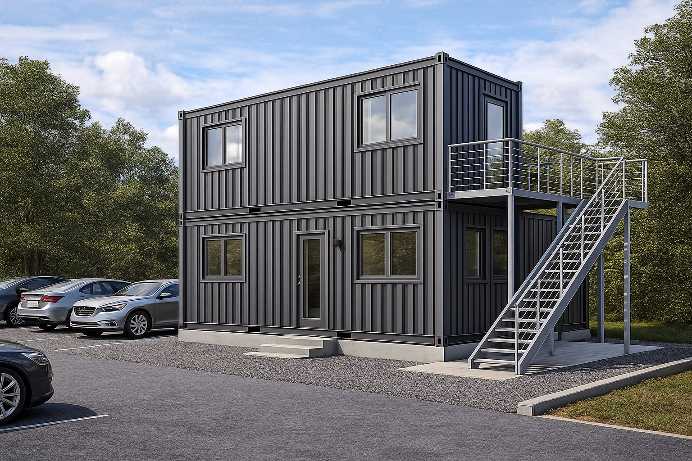
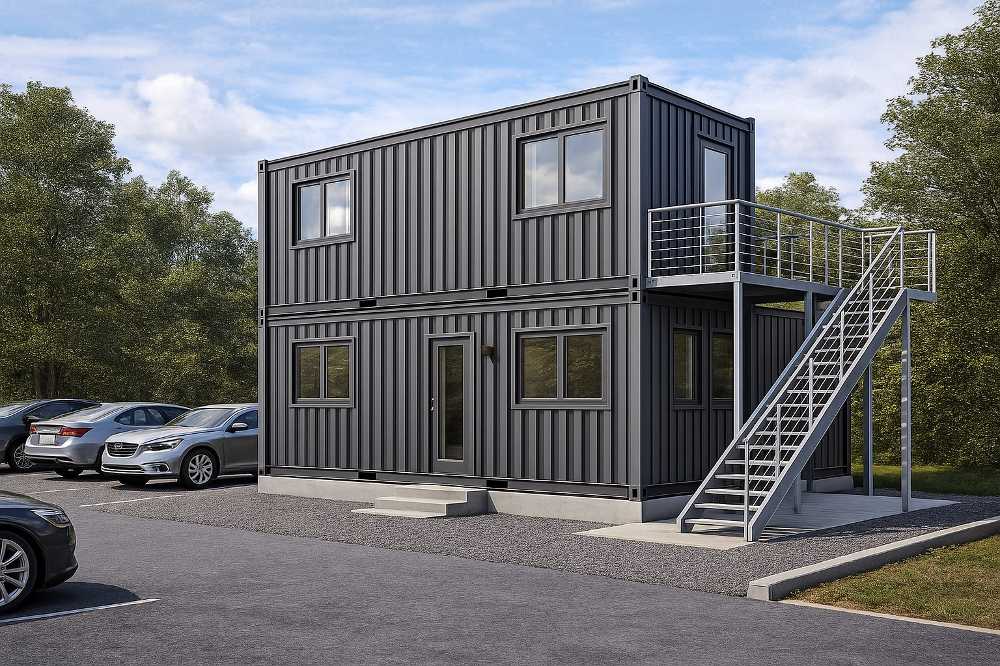

← Zurück zu Container & Modulbau
Umbau von Seecontainern zu Lager-, Büro- und Technikräumen
Wir verfügen über langjährige Erfahrung im Umbau von gebrauchten Seecontainern. Aus Standardcontainern entstehen isolierte Räume für Lager, Werkstatt, Technik, Büro, Gartenbüro oder temporäre Wohn- und Aufenthaltsmodule – ideal für Hof, Baustelle, Betriebsareal oder als Ergänzung zu bestehenden Gebäuden im Kanton Zürich.
Der Container wird von uns vollständig vorbereitet: Dämmung von Boden, Wänden und Decke, Einbau von stabilen Unterkonstruktionen, Fenstern und Türen, robuster Eingangstür mit Sicherheitsbeschlägen sowie Vorbereitung für Elektro- und Sanitärinstallationen. Auf Wunsch planen und realisieren wir WC, Dusche, kleine Küche oder Technikraum für Heizung, Wasseraufbereitung oder Elektroverteilung.
Beim Innenausbau können je nach Nutzung verschiedene Systeme eingesetzt werden: Gipskartonplatten, Holzschalungen, OSB-Platten, beschichtete Spanplatten oder andere robuste Wandverkleidungen. Für den Boden verlegen wir Parkett, Laminat, Vinyl, Linoleum oder – punktuell – keramische Fliesen, zum Beispiel im Nassbereich oder Eingangsbereich.
Aussen verkleiden wir den Container auf Wunsch mit Trapezblech, Wellblech oder Metallfassadenplatten oder mit horizontalen/vertikalen Holzlatten, um die Fassade optisch aufzuwerten und vor Sonneneinstrahlung zu schützen. Vor allen Beschichtungen wird der Stahl mit korrosionsschützender Grundierung und Lack behandelt, damit der Container langfristig gegen Rost geschützt ist.
Ergänzend können wir Vordächer, Carports und Terrassen anbauen – etwa einen überdachten Stellplatz für Auto oder Fahrräder, einen gedeckten Eingangsbereich oder eine Dachterrasse mit Geländer und Überdachung. So entsteht aus einem Seecontainer eine flexible, mobile Einheit mit klar kalkulierbaren Kosten und deutlich kürzerer Bauzeit als beim klassischen Massivbau.
Bilder zum Projekt
 


Seecontainer als Lager, Büro oder Technikraum geplant?
Wenn Sie im Kanton Zürich oder in der Schweiz einen Seecontainer als Lagercontainer, Bürocontainer, Technikcontainer, Sanitärcontainer oder kleines Wohnmodul nutzen möchten, unterstützen wir Sie gerne von der Idee bis zur Montage. Wir prüfen die vorhandenen Container, schlagen sinnvolle Ausbauvarianten vor und erstellen eine Lösung, die zu Ihrem Standort und Budget passt.
Sie können uns über das Kontaktformular, per E-Mail, via WhatsApp oder telefonisch unter +41 79 846 78 31 erreichen. Schicken Sie uns gerne eine kurze Beschreibung, Fotos des bestehenden Containers oder eine Skizze – wir melden uns zeitnah mit möglichen Ausführungsvarianten.